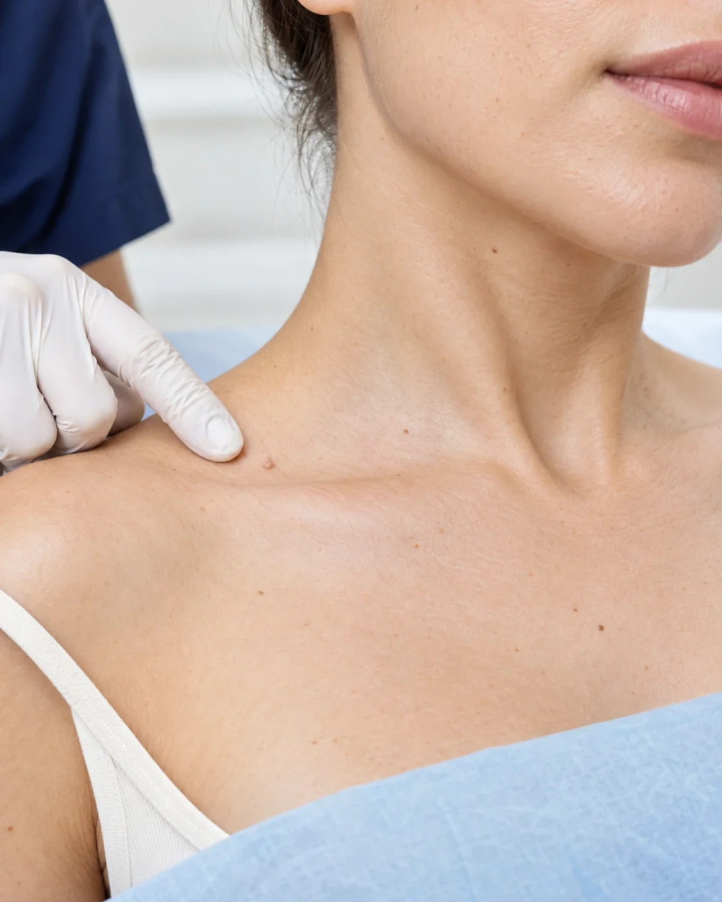

Удаление новообразований в Нижнем Новгороде в «Бетта Клиника»: вернём былую чистоту коже
Удаление новообразований в Нижнем Новгороде – это медицинская процедура, направленная на удаление различных кожных образований: родинок, папиллом, гемангиом, кератом, моллюсков, атером, бородавок, кондилом.
Кроме того, некоторые виды новообразований, такие как родинки, могут со временем перерождаться в злокачественные, создавая потенциальную угрозу для здоровья. Поэтому своевременное обращение к специалисту для диагностики и удаления кожных новообразований является обязательным шагом для сохранения вашего здоровья и красоты.
В Центре лазерной и врачебной косметологии «Бетта Клиника» Нижний Новгород мы предлагаем удаление новообразований разными способами, используя современные методы и оборудование: криодеструкция, электрокоагуляция, неодимовый лазер Magic Super Full (Россия).
В нашей клинике доступно гистологическое исследование новообразований, дерматоскопия и фотодерматоскопия.

Что дает?
- 01Современные методы
- 02Разные способы удаления
- 03Врачи с высшим медицинским образованием
- 04Чистая кожа
- 05Гистологическое исследование
- 06Минимальный риск осложнений